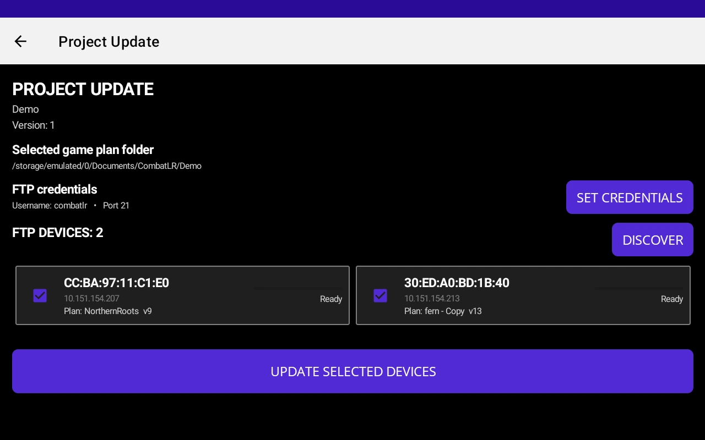

GETTING STARTED / 04
Transfer files.
Once the map and game plan are ready, the required project files need to be copied to the ESP32 player units. CombatLR Mobile discovers units and handles the setup and transfer workflow.
- A completed CombatLR game plan package.
- A Wi-Fi network running DHCP.
- Game units configured with the SSID and password of the network.
- The CombatLR mobile device on this network. Try the hotspot function of your Android device. See ESP32 Network Credentials for initial Wi-Fi and FTP setup.
1. Prepare the project files
Check that the selected game project contains the map package and the saved game plan for the match. The MapBuilder
export consists of map.bmp, map.json and gameplan.json; keep these together.
Use the final version of the project you intend to play. If you make changes after transferring, transfer the updated files again so the units are using the same plan.
2. Power up and discover the units
Hold the Trigger and Reload switches and power on the player unit. Keep holding these for at least 2 seconds until the FTP screen appears.
The player unit should connect to the Wi-Fi network and appear on the file transfer screen.
Check that the expected devices appear. The app reports each MAC, IP address and current game plan.

Press to change the FTP credentials the game unit requires for FTP transfer. See ESP32 Network Credentials for initial FTP setup.
Select the blue checkbox for each player unit to be updated. Press to start the transfer.
3. Check the transfer and plan status
Wait for each file transfer to finish. The player unit pane will be removed from the display grid on successful transfer.
When all transfers are complete, return to the Game Control screen and check the correct game plan is in place on each unit.
The local network is used to discover, configure and transfer files to the units before play. The match itself does not require continuous communication between player units or a venue-installed network, base station or central server. GPS coverage is still required for location-based gameplay.
Manage the game
Verify the players, start the match and keep an eye on game progress.
Manage games →